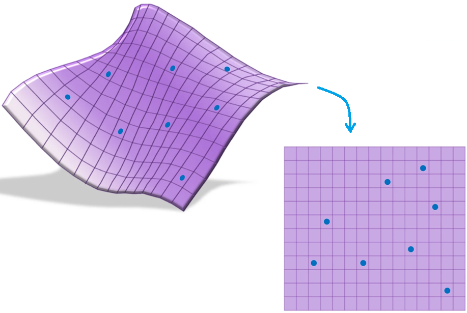
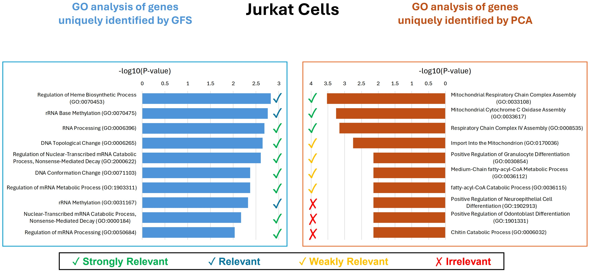
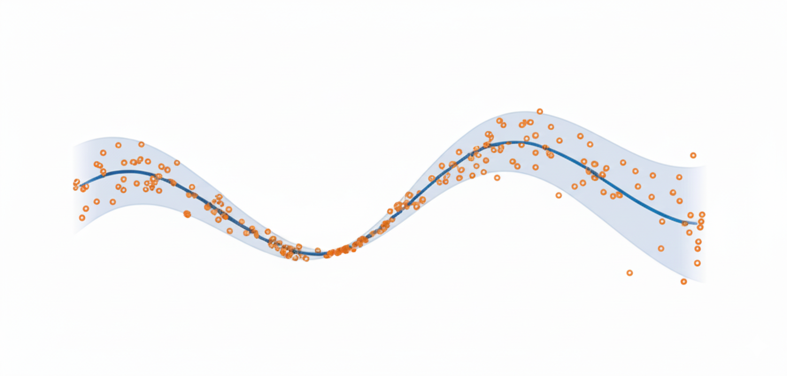
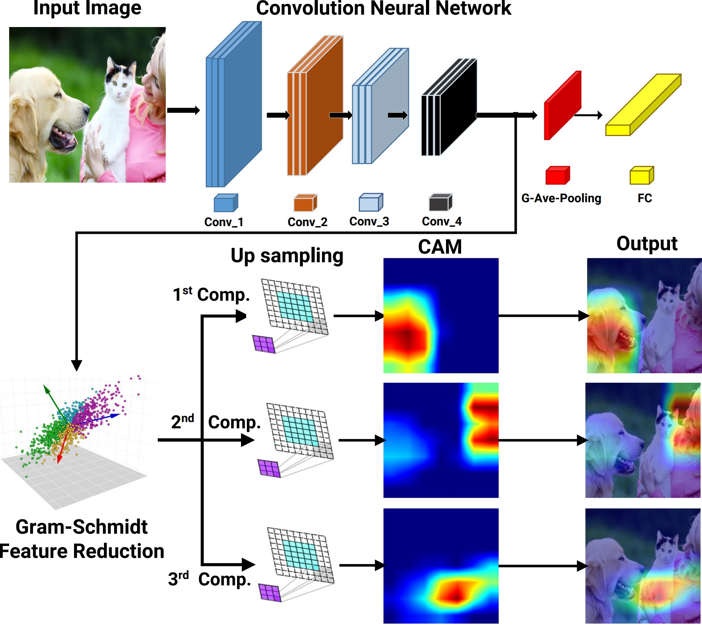
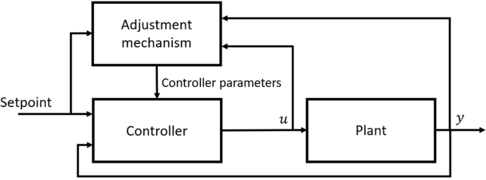

- Washington University in St. Louis
Bio
I am a Ph.D. candidate in the Department of Electrical and Systems Engineering at Washington University in St. Louis, advised by Professor Bruno Sinopoli and Professor Netanel Raviv. My current research interests include statistical learning, uncertainty quantification, and control theory. I received my B.Sc. and M.Sc. degrees from Sharif University of Technology in Iran. Before joining WashU, I worked as a data scientist at Snapp. Prior to that, I was a research engineer at Fankavan Aral Group.
Education
-
Ph.D.
Ph.D. in Electrical Engineering
Washington University in St. Louis
Thesis: High-Dimensional Data Analysis with Low-Dimensional Models
Advisors: Professor Bruno Sinopoli and Professor Netanel Raviv
-
M.Sc.
M.Sc. in Mechanical Engineering
Sharif University of Technology
Thesis: Design of Adaptive Controllers for Nonlinear Fractional-Order Systems
Advisor: Professor Hassan Salarieh
-
B.Sc.
B.Sc. in Mechanical Engineering
Sharif University of Technology
Thesis: Development of Simulation Software for Global Navigation Satellite System
Advisor: Professor Hassan Salarieh
Professional Experience
-
present 09/2019
-
08/2019 01/2017
Data Scientist
-
12/2016 10/2015
Research Engineer
-
09/2015 12/2013
Research Assistant
Sharif University of Technology, Control Laboratory
Research Summary
My PhD research focused on developing new methods for feature extraction and selection in unsupervised learning, particularly when data exhibit complex nonlinear dependencies. This work bridges the gap between linear interpretability and nonlinear modeling power, contributing new theory and practical tools for data representation. The resulting algorithms provide:
🧬 Application in Genomics: I applied my proposed Gram-Schmidt Functional Selection (GFS) algorithm to large-scale genomics datasets to remove irrelevant and redundant genes, which enhanced data quality, improved interpretability, and led to more reliable and robust biological insights in downstream analyses.
🖼️ Application in Deep Learning Interpretability: I developed GFS-CAM, a gradient-free Class Activation Mapping (CAM) technique that applies Gram-Schmidt Functional Selection to enhance deep neural network interpretability. It identifies informative and non-redundant feature maps, producing clear, interpretable visual explanations.
Beyond my core PhD work, I have also explored the area of uncertainty quantification, specifically conformal prediction.
As side projects during my PhD, I worked on learning dynamical systems and on the safety and security of cyber-physical systems. I developed data-driven frameworks for fractional-order nonlinear systems that accurately capture long-range dependencies, and designed methods for replay attack detection and safe control in cyber-physical and drug-delivery systems, ensuring stability, robustness, and reliability in real-world applications.
Interests
- Statistical Learning
- Control Theory and Dynamical Systems
- Uncertainty Quantification
- Explainable AI
Research Projects
-

Unsupervised Feature Extraction and Selection: Feature extraction and selection in the presence of nonlinear dependencies among the data is a fundamental challenge in unsupervised learning. We propose using a Gram-Schmidt (GS) type orthogonalization process over function spaces to detect and map out such dependencies. Specifically, by applying the GS process over some family of functions, we construct a series of covariance matrices that can either be used to identify new large-variance directions, or to remove those dependencies from known directions. In the former case, we provide information-theoretic guarantees in terms of entropy reduction. In the latter, we provide precise conditions by which the chosen function family eliminates existing redundancy in the data. Each approach provides both a feature extraction and a feature selection algorithm. Our feature extraction methods are linear, and can be seen as natural generalization of principal component analysis (PCA). We provide experimental results for synthetic and real-world benchmark datasets which show superior performance over state-of-the-art (linear) feature extraction and selection algorithms. Surprisingly, our linear feature extraction algorithms are comparable and often outperform several important nonlinear feature extraction methods such as autoencoders, kernel PCA, and UMAP. Furthermore, one of our feature selection algorithms strictly generalizes a recent Fourier-based feature selection mechanism, yet at significantly reduced complexity.
Supervised Feature Selection: Supervised feature selection is essential for improving model interpretability and predictive performance, particularly in high-dimensional settings where irrelevant and redundant features can degrade classification accuracy. In this paper, we propose Supervised Gram-Schmidt Feature Selection (SGFS), a novel algorithm that iteratively selects features by leveraging the Gram-Schmidt (GS) orthogonalization process in function spaces. SGFS constructs an orthonormal basis of functions such that each selected feature maximally contributes to the classification task via the Bayes predictor. At each iteration, the algorithm updates the feature space by removing the projections of the remaining features onto the previously selected orthonormal functions, thereby identifying the feature that minimizes the Bayes error rate. By operating in function space, SGFS effectively captures nonlinear dependencies among features. We evaluate the proposed method on real-world datasets and demonstrate its superiority in classification accuracy compared to state-of-the-art feature selection techniques.
-
List of Papers
- B. Yaghooti, N. Raviv, and B. Sinopoli, "Gram-schmidt methods for unsupervised feature extraction and selection," IEEE Transactions on Information Theory, 2025.
- B. Yaghooti, N. Raviv, and B. Sinopoli, “Gram-schmidt methods for unsupervised feature selection,” in 2024 IEEE 63rd Conference on Decision and Control (CDC). IEEE, 2024, pp. 7700–7707.
- B. Yaghooti, N. Raviv, and B. Sinopoli, “Beyond PCA: A gram-schmidt approach to feature extraction,” in 2024 60th Annual Allerton Conference on Communication, Control, and Computing. IEEE, 2024, pp. 1–8.
- B. Yaghooti, N. Raviv, and B. Sinopoli, "Supervised Gram-Schmidt Feature Selection," IEEE International Conference on Acoustics, Speech, and Signal Processing (ICASSP), 2026 (Under Review).
-
- Gram-Schmidt Functional Selection (GFS) was applied prior to Principal Component Analysis (PCA) on genomics datasets. This procedure enabled the elimination of irrelevant or redundant features, thereby enhancing the quality of the input data. By retaining only the most informative variables, the subsequent PCA more effectively captured the underlying biological variation, improving both interpretability and analytical robustness.
-
List of Papers
- B. Yaghooti, Y.E. Li, N. Raviv, and B. Sinopoli, "An Interpretable Framework for Gene Selection using Gram-Schmidt Functional Selection," To be submitted to Bioinformatics.
-

Conformal Prediction for Time Series: This project introduces Conformal Prediction for Autoregressive Models (CPAM), a computationally efficient and theoretically grounded framework for reliable uncertainty quantification in time-series forecasting. Unlike standard conformal methods that assume independent data, CPAM integrates split conformal inference with classical time-series tools, combining Yule-Walker estimation, AIC-based autoregressive order selection, and residual-based calibration to construct prediction intervals with provable marginal coverage guarantees under weak temporal dependence. The method is analytically tractable, avoids repeated model refitting, and scales efficiently to large datasets. Experiments on both synthetic and real-world data, including wind power and solar irradiance forecasting, show that CPAM achieves coverage close to nominal levels while maintaining practical interval widths, making it a reliable tool for high-stakes forecasting applications.
Optimal Data Splitting for Split Conformal Prediction: This project investigates the problem of optimal data splitting in split conformal prediction, where the choice of dividing data between training and calibration has a direct impact on predictive performance. Standard approaches often use arbitrary or fixed splits, which can yield suboptimal trade-offs between model accuracy and coverage reliability. To address this limitation, the work develops a principled framework for selecting split proportions that balance the competing demands of model training and calibration, thereby improving both the efficiency and robustness of prediction intervals. Theoretical analysis and empirical results across diverse datasets demonstrate that optimal splitting produces narrower and more informative intervals while preserving rigorous coverage guarantees, providing a systematic and practical enhancement to one of the most widely used conformal prediction methods.
Conformal Prediction in Medical Imaging with Vision Transformers This project applies conformal prediction to medical imaging, with a focus on Vision Transformer (ViT) architectures to enable trustworthy AI-assisted decision-making in healthcare. While ViTs have demonstrated state-of-the-art performance in image analysis, their predictions often lack calibrated uncertainty estimates, a critical requirement for safety-sensitive clinical applications. This work integrates conformal calibration into ViT-Base and ViT-Small models, equipping them with the ability to output statistically valid and interpretable prediction sets that adapt to task complexity. The approach remains computationally efficient while delivering reliable uncertainty quantification. Evaluations on medical imaging datasets confirm that conformalized ViTs achieve robust coverage guarantees without sacrificing predictive accuracy, making them well-suited for real-world deployment in clinical decision-support systems.
-
List of Papers
- B. Yaghooti, S. Das, B. Sinopoli, and S. Lahiri, "Conformal Prediction for Autoregressive Models," IEEE International Conference on Acoustics, Speech, and Signal Processing (ICASSP), 2026. (Under Review)
- S. Das, T. Kuffner, and S. Lahiri, B. Yaghooti (Alphabetical Order), "Optimal Data Splitting for Split Conformal Prediction," To be submitted to The Annals of Statistics.
- B. Yaghooti, B. Sinopoli, "Robust Self-Supervised Representation Learning via Conformal Prediction," To be submitted to IEEE Transactions on Medical Imaging.
-

- We present data-integrated frameworks for learning the dynamics of fractional-order nonlinear systems in both discrete-time and continuous-time settings. The proposed framework consists of two main steps. In the first step, input-output experiments are designed to generate the necessary datasets for learning the system dynamics, including the fractional order, the drift vector field, and the control vector field. In the second step, these datasets, along with the memory-dependent property of fractional-order systems, are used to estimate the system's fractional order. The drift and control vector fields are then reconstructed using orthonormal basis functions. To validate the proposed approach, the algorithm is applied to four benchmark fractional-order systems. The results confirm the effectiveness of the proposed framework in learning the system dynamics accurately. Finally, the same datasets are used to learn equivalent integer-order models. The numerical comparisons demonstrate that fractional-order models better capture long-range dependencies, highlighting the limitations of integer-order representations.
-
List of Papers
- B. Yaghooti, B. Sinopoli, "Inferring Dynamics of Discrete-time, Fractional-Order Control-affine Nonlinear Systems," 2023 American Control Conference (ACC). IEEE, 2023, pp. 935–940.
- B. Yaghooti, C. Li, B. Sinopoli, "A Data-Integrated Framework for Learning Fractional-Order Nonlinear Dynamical Systems," Communications in Nonlinear Science and Numerical Simulation, 2025 (Under Review).
-

The first part of the project introduces the Gram-Schmidt Feature Reduction Class Activation Map (GFR-CAM), a novel framework designed to address the limitations of existing CAM methods in explaining deep learning models. Unlike traditional approaches that generate a single dominant explanation, GFR-CAM leverages Gram-Schmidt orthogonalization to extract a sequence of orthogonal, information-rich components from feature maps. This hierarchical decomposition provides a multi-faceted and holistic view of model reasoning, enabling richer interpretability in complex visual scenes with multiple objects or semantic parts. Experiments on ResNet-50 and Swin Transformer architectures across the ImageNet and PASCAL VOC datasets demonstrate that GFR-CAM produces meaningful, disentangled explanations while maintaining competitive performance with state-of-the-art methods.
The second part of the project develops the Gram-Schmidt Functional Selection Class Activation Map (GFS-CAM), a gradient-free interpretability method that overcomes key drawbacks of existing CAM techniques. By systematically applying Gram-Schmidt Functional Selection (GFS), the method iteratively orthogonalizes and selects feature maps that maximize residual variance, ensuring the extracted features are informative, non-redundant, and mutually orthogonal. This principled selection process allows GFS-CAM to generate disentangled explanations that separate distinct semantic concepts — such as multiple objects or background — into clear, interpretable heatmaps. Evaluations on VGG-16, Inception-v3, and ResNeXt-50 architectures with ILSVRC2012 and PASCAL VOC 2007 benchmarks confirm that GFS-CAM significantly outperforms state-of-the-art methods across faithfulness, localization, and ROAD metrics, establishing it as a powerful tool for trustworthy CNN interpretability.
-
List of Papers
- K. Safavigerdini, B. Yaghooti, E. Rezaeei, and K. Palaniappan, "GFR-CAM: Gram-Schmidt Feature Reduction for Hierarchical Class Activation Maps," IEEE/CVF International Conference on Computer Vision (ICCV), 2025.
- K. Safavigerdini, B. Yaghooti, B. Sinopoli, and K. Palaniappan, "Gram-Schmidt Feature Selection for Class Activation Maps," (K. Safavigerdini and B. Yaghooti contributed equally) IEEE International Conference on Acoustics, Speech, and Signal Processing (ICASSP), 2026 (Under Review).
- K. Safavigerdini, B. Yaghooti, B. Sinopoli, and K. Palaniappan, "Nonlinear Functional Analysis for Class Activation Maps," (K. Safavigerdini and B. Yaghooti contributed equally.) IEEE/CVF Winter Conference on Applications of Computer Vision (WACV), 2026. (Under Review)
-
Security of Cyber-Physical Systems: This project studies replay attack detection in cyber-physical systems (CPSs) through the use of physical watermarking, a well-established defense mechanism. While most watermarking approaches in the literature are designed for discrete-time systems, real-world physical systems generally evolve in continuous time. This work analyzes the effect of watermarking on sampled-data continuous-time systems controlled via a Zero-Order Hold, with a focus on how sampling impacts detection performance. A procedure is proposed to determine a suitable sampling period that balances detectability with acceptable control performance. The effectiveness of the theoretical results is demonstrated through simulations on a quadrotor system.
Safety in Drug Delivery Systems: This project develops an approach for controlling fractional-order semilinear systems subject to linear constraints, motivated by applications in drug delivery. The proposed design procedure consists of two stages: first, a linear state-feedback control law is introduced to prestabilize the system in the absence of constraints, with stability and convergence formally established using Lyapunov theory. Second, a constraint-handling mechanism based on the Explicit Reference Governor (ERG) is employed to ensure constraint satisfaction at all times. The ERG works by translating the linear constraints into bounds on the Lyapunov function and manipulating an auxiliary reference to guarantee that the Lyapunov function remains below a threshold value. The method is applied to the control of drug concentration in a drug delivery system and validated through extensive simulation results.
-
List of Papers
- B. Yaghooti, R. Romagnoli, B. Sinopoli, "Physical Watermarking for Replay Attack Detection in Continuous-time Systems," European Journal of Control, vol. 62, pp. 57–62, 2021.
- B. Yaghooti, M. Hosseinzadeh, B. Sinopoli, "Constrained Control of Semilinear Fractional-Order Systems: Application in Drug Delivery Systems," 2020 IEEE Conference on Control Technology and Applications (CCTA). IEEE, 2020, pp. 833–838.
-

- In this project, adaptive control techniques are developed and applied to three core tasks: (1) reference signal tracking, where controllers are designed to ensure accurate trajectory following under system uncertainties; (2) synchronization of two chaotic systems, demonstrating the ability of adaptive schemes to align the dynamics of complex nonlinear systems; and (3) delayed feedback control design for stabilizing unstable periodic orbits, providing a systematic approach to handle time delays while ensuring stability. Together, these contributions highlight the versatility of adaptive control methods in addressing fundamental challenges in nonlinear dynamics and control theory.
-
List of Papers
- B. Yaghooti, K. Safavi, R. Hajiloo, H. Salarieh, "Stabilizing Unstable Periodic Orbit of Unknown Fractional-Order Systems via Adaptive Delayed Feedback Control," Proceedings of the Institution of Mechanical Engineers, Part I: Journal of Systems and Control Engineering, vol. 238, no. 4, pp. 693–703, 2024.
- B. Yaghooti, A. Siahi Shadbad, K. Safavi, H. Salarieh, "Adaptive Synchronization of Uncertain Fractional Order Chaotic Systems Using Sliding Mode Control Techniques," Proceedings of the Institution of Mechanical Engineers, Part I: Journal of Systems and Control Engineering, vol. 234, no. 1, pp. 3–9, 2020.
- B. Yaghooti, H. Salarieh, "Robust Adaptive Fractional Order PID Controller Design for Uncertain Fractional Order Nonlinear Systems Using Sliding Mode Control," Proceedings of the Institution of Mechanical Engineers, Part I: Journal of Systems and Control Engineering, vol. 232, no. 5, pp. 550–557, 2018.
Industrial Experience
-
- Optimized driver-passenger meeting points with a pickup suggestion system, reducing wait times and improving satisfaction
- Enabled quick access to frequently used locations with a favorite points feature, boosting retention and engagement
- Developed a traffic prediction model for real-time forecasting and accurate route planning, reducing trip duration
- Created a one-click ride functionality for instant booking with minimal input, enhancing user experience and increasing conversions
-
- Designed and implemented a distributed monitoring and automatic fault detection system
- Designed and manufactured a motion simulator and hardware-in-the-loop (HIL) test system
- esigned and manufactured a vibration analyzer and signal processing data logger
-
- Developed simulation software for global navigation satellite system
- Designed and implemented controller and converter for hexaglide CNC
- Force and stress analysis of double press machine in use with single-action die press
- Finite element analysis, modal testing, and control of flexible structures
- Wind turbine gearbox detailed design
Publications
Filter by type:
Sort by year:
Gram-Schmidt Methods for Unsupervised Feature Extraction and Selection
Journal PaperIEEE Transactions on Information Theory, 2025
Abstract
Feature extraction and selection in the presence of nonlinear dependencies among the data is a fundamental challenge in unsupervised learning. We propose using a Gram-Schmidt (GS) type orthogonalization process over function spaces to detect and map out such dependencies. Specifically, by applying the GS process over some family of functions, we construct a series of covariance matrices that can either be used to identify new large-variance directions, or to remove those dependencies from known directions. In the former case, we provide information-theoretic guarantees in terms of entropy reduction. In the latter, we provide precise conditions by which the chosen function family eliminates existing redundancy in the data. Each approach provides both a feature extraction and a feature selection algorithm. Our feature extraction methods are linear, and can be seen as natural generalization of principal component analysis (PCA). We provide experimental results for synthetic and real-world benchmark datasets which show superior performance over state-of-the-art (linear) feature extraction and selection algorithms. Surprisingly, our linear feature extraction algorithms are comparable and often outperform several important nonlinear feature extraction methods such as autoencoders, kernel PCA, and UMAP. Furthermore, one of our feature selection algorithms strictly generalizes a recent Fourier-based feature selection mechanism (Heidari et al., IEEE Transactions on Information Theory, 2022), yet at significantly reduced complexity.
A Data-Integrated Framework for Learning Fractional-Order Nonlinear Dynamical Systems
Under Review Journal PaperCommunications in Nonlinear Science and Numerical Simulation, 2025
Abstract
This paper presents a data-integrated framework for learning the dynamics of fractional-order nonlinear systems in both discrete-time and continuous-time settings. The proposed framework consists of two main steps. In the first step, input-output experiments are designed to generate the necessary datasets for learning the system dynamics, including the fractional order, the drift vector field, and the control vector field. In the second step, these datasets, along with the memory-dependent property of fractional-order systems, are used to estimate the system's fractional order. The drift and control vector fields are then reconstructed using orthonormal basis functions. To validate the proposed approach, the algorithm is applied to four benchmark fractional-order systems. The results confirm the effectiveness of the proposed framework in learning the system dynamics accurately. Finally, the same datasets are used to learn equivalent integer-order models. The numerical comparisons demonstrate that fractional-order models better capture long-range dependencies, highlighting the limitations of integer-order representations.
Conformal Prediction for Autoregressive Models
Under Review Conference Paper IEEE International Conference on Acoustics, Speech, and Signal Processing (ICASSP), 2026.
Abstract
Reliable uncertainty quantification is essential in time-series forecasting, particularly in high-stakes domains such as healthcare, finance, and energy systems, where predictive errors can carry significant consequences. While conformal prediction (CP) provides finite-sample coverage under minimal assumptions, its application to dependent data, such as autoregressive (AR) sequences, remains challenging. This paper introduces Conformal Prediction for Autoregressive Models (CPAM), a computationally efficient and theoretically grounded framework that integrates split conformal inference with classical time-series techniques. CPAM combines Yule-Walker estimation, AIC-based autoregressive order selection, and residual-based calibration to construct prediction intervals with provable marginal coverage guarantees, even under weak temporal dependence. The procedure is analytically tractable, avoids model refitting, and scales efficiently to large datasets. Empirical evaluations on both synthetic and real-world time series, including wind power and solar irradiance datasets, demonstrate that CPAM consistently achieves coverage close to the nominal level.
Supervised Gram-Schmidt Feature Selection
Under Review Conference Paper IEEE International Conference on Acoustics, Speech, and Signal Processing (ICASSP), 2026.
Abstract
Supervised feature selection is essential for improving model interpretability and predictive performance, particularly in high-dimensional settings where irrelevant and redundant features can degrade classification accuracy. In this paper, we propose Supervised Gram-Schmidt Feature Selection (SGFS), a novel algorithm that iteratively selects features by leveraging the Gram-Schmidt (GS) orthogonalization process in function spaces. SGFS constructs an orthonormal basis of functions such that each selected feature maximally contributes to the classification task via the Bayes predictor. At each iteration, the algorithm updates the feature space by removing the projections of the remaining features onto the previously selected orthonormal functions, thereby identifying the feature that minimizes the Bayes error rate. By operating in function space, SGFS effectively captures nonlinear dependencies among features. We evaluate the proposed method on real-world datasets and demonstrate its superiority in classification accuracy compared to state-of-the-art feature selection techniques.
GFR-CAM: Gram-Schmidt Feature Reduction for Hierarchical Class Activation Maps
Conference Paper IEEE/CVF International Conference on Computer Vision (ICCV), 2025.
Abstract
Deep learning models have achieved remarkable success in computer vision tasks, yet their decision-making processes remain largely opaque, limiting their adoption especially in safety-critical applications. While Class Activation Maps (CAMs) have emerged as a prominent solution for visual explanation, existing methods suffer from a fundamental limitation: they produce single, consolidated explanations leading to ``explanatory tunnel vision.'' Current CAM methods fail to capture the rich, multi-faceted reasoning that underlies model predictions, particularly in complex scenes with multiple objects or intricate visual relationships. We introduce the Gram-Schmidt Feature Reduction Class Activation Map (GFR-CAM), a novel gradient-free framework that overcomes this limitation through hierarchical feature decomposition that provides a more holistic view of the architecture's explanatory power. Unlike existing feature reduction methods that rely on Principal Component Analysis (PCA) and generate a single dominant explanation, GFR-CAM leverages Gram-Schmidt orthogonalization to systematically extract a sequence of orthogonal, information rich components from model feature maps. The subsequent orthogonal components are shown to be meaningful explanations — not mere noise, that decomposes single objects into semantic parts and systematically disentangles multi-object scenes to identify co-existing entities. We show that GFR-CAM on ResNet-50 and Swin Transformer architectures across ImageNet and PASCAL VOC datasets achieves competitive performance with state-of-the-art methods.
Gram-Schmidt Feature Selection for Class Activation Maps
Under Review Conference Paper IEEE International Conference on Acoustics, Speech, and Signal Processing (ICASSP), 2026. (K. Safavigerdini and B. Yaghooti contributed equally.)
Abstract
The interpretability of Convolutional Neural Networks (CNNs) is critical for their adoption in high-stakes applications, yet their ``black-box'' nature remains a significant challenge. Class Activation Mapping (CAM) techniques provide visual explanations, but existing methods suffer from notable drawbacks: gradient-based approaches are prone to noise and instability, while gradient-free alternatives are often computationally expensive or lack principled feature selection strategies for handling redundant information. This paper introduces GFS-CAM, a novel, gradient-free interpretation method that addresses these limitations by systematically selecting informative and non-redundant features. GFS-CAM leverages Gram-Schmidt Functional Selection (GFS) to iteratively orthogonalize feature maps from the final convolutional layer. At each step, it selects the feature that maximizes the residual variance, ensuring the chosen features are mutually orthogonal and capture maximal remaining information. This orthogonalization process uniquely enables GFS-CAM to produce disentangled explanations, isolating distinct semantic concepts (e.g., multiple objects or background) into separate, interpretable heatmaps. Extensive experiments on standard benchmarks (ILSVRC2012, PASCAL VOC 2007) with VGG-16, Inception-v3, and ResNeXt-50 architectures demonstrate that GFS-CAM significantly outperforms state-of-the-art methods. Our method achieves superior performance across a suite of metrics, including faithfulness (ADCC), localization accuracy, and the rigorous RemOve And Debias (ROAD) benchmark, confirming its ability to generate more coherent, focused, and faithful visual explanations.
Gram-Schmidt Methods for Unsupervised Feature Selection
Conference Paper 2024 IEEE 63rd Conference on Decision and Control (CDC). IEEE, 2024, pp. 7700–7707.
Abstract
Unsupervised feature selection is a critical task in data analysis, particularly when faced with high-dimensional datasets and complex and nonlinear dependencies among features. In this paper, we propose a family of Gram-Schmidt feature selection approaches to unsupervised feature selection that addresses the challenge of identifying non-redundant features in the presence of nonlinear dependencies. Our method leverages probabilistic Gram-Schmidt (GS) orthogonalization to detect and map out redundant features within the data. By applying the GS process to capture nonlinear dependencies through a pre-defined, fixed family of functions, we construct variance vectors that facilitate the identification of high-variance features, or the removal of these dependencies from the feature space. In the first case, we provide information-theoretic guarantees in terms of entropy reduction. In the second case, we demonstrate the efficacy of our approach by proving theoretical guarantees under certain assumptions, showcasing its ability to detect and remove nonlinear dependencies. To support our theoretical findings, we experiment over various synthetic and real-world datasets, showing superior performance in terms of classification accuracy over state-of-the-art methods. Further, our information-theoretic feature selection algorithm strictly generalizes a recently proposed Fourier-based feature selection mechanism at significantly reduced complexity.
Beyond PCA: A Gram-Schmidt Approach to Feature Extraction
Conference Paper 2024 60th Annual Allerton Conference on Communication, Control, and Computing. IEEE, 2024, pp. 1–8.
Abstract
Linear feature extraction at the presence of nonlinear dependencies among the data is a fundamental challenge in unsupervised learning. We propose using a Gram-Schmidt (GS) type orthogonalization process over function spaces in order to detect and remove redundant dimensions. Specifically, by applying the GS process over a family of functions which presumably captures the nonlinear dependencies in the data, we construct a series of covariance matrices that can either be used to identify new large-variance directions, or to remove those dependencies from the principal components. In the former case, we provide information-theoretic guarantees in terms of entropy reduction. In the latter, we prove that under certain assumptions the resulting algorithms detect and remove nonlinear dependencies whenever those dependencies lie in the linear span of the chosen function family. Both proposed methods extract linear features from the data while removing nonlinear redundancies. We provide simulation results on synthetic and real-world datasets which show improved performance over state-of-the-art feature extraction algorithms.
Inferring Dynamics of Discrete-time, Fractional-Order Control-affine Nonlinear Systems
Conference Paper 2023 American Control Conference (ACC). IEEE, 2023, pp. 935–940.
Abstract
In this paper, a system identification algorithm is proposed for control-affine, discrete-time fractional-order nonlinear systems. The proposed algorithm is a data-integrated framework that provides a mechanism for data generation and then uses this data to obtain the drift-vector, control-vector fields, and the fractional order of the system. The proposed algorithm includes two steps. In the first step, experiments are designed to generate the required data for dynamic inference. The second step utilizes the generated data in the first step to obtain the system dynamics. The memory-dependent property of fractional-order Grünwald-Letnikov difference operator is used to compute the fractional order of the system. Then, drift-vector and control-vector fields are reconstructed using orthonormal basis functions, and calculation of the coefficients is formulated as an optimization problem. Finally, simulation results are provided to illustrate the effectiveness of the proposed framework. Additionally, one of the methods for identifying integer-order systems is applied to the generated data by a fractional-order system, and the results are included to show the benefit of using a fractional-order model in long-range dependent processes.
Physical Watermarking for Replay Attack Detection in Continuous-Time Systems
Journal PaperEuropean Journal of Control, vol. 62, pp. 57–62, 2021.
Abstract
Physical watermarking is a well established technique for replay attack detection in cyber-physical systems (CPSs). Most of the watermarking methods proposed in the literature are designed for discrete-time systems. In general real physical systems evolve in continuous time. In this paper, we analyze the effect of watermarking on sampled-data continuous-time systems controlled via a Zero-Order Hold. We investigate the effect of sampling on detection performance and we provide a procedure to find a suitable sampling period that ensures detectability and acceptable control performance. Simulations on a quadrotor system are used to illustrate the effectiveness of the theoretical results.
Stabilizing Unstable Periodic Orbit of Unknown Fractional-Order Systems via Adaptive Delayed Feedback Control
Journal Paper Proceedings of the Institution of Mechanical Engineers, Part I: Journal of Systems and Control Engineering, vol. 238, no. 4, pp. 693–703, 2024.
Abstract
This article presents an adaptive nonlinear delayed feedback control scheme for stabilizing the unstable periodic orbit of unknown fractional-order chaotic systems. The proposed control framework uses the Lyapunov approach and sliding mode control technique to guarantee that the closed-loop system is asymptotically stable on a periodic trajectory sufficiently close to the unstable periodic orbit of the system. The proposed method has two significant advantages. First, it employs a direct adaptive control method, making it easy to implement this method on systems with unknown parameters. Second, the framework requires only the period of the unstable periodic orbit. The robustness of the closed-loop system against system uncertainties and external disturbances with unknown bounds is guaranteed. Simulations on fractional-order duffing and gyro systems are used to illustrate the effectiveness of the theoretical results. The simulation results demonstrate that our approach outperforms the previously developed linear feedback control method for stabilizing unstable periodic orbits in fractional-order chaotic systems, particularly in reducing steady-state error and achieving faster convergence of tracking error.
Adaptive Synchronization of Uncertain Fractional Order Chaotic Systems Using Sliding Mode Control Techniques
Journal Paper Proceedings of the Institution of Mechanical Engineers, Part I: Journal of Systems and Control Engineering, vol. 234, no. 1, pp. 3–9, 2020.
Abstract
In this article, an adaptive nonlinear controller is designed to synchronize two uncertain fractional-order chaotic systems using fractional-order sliding mode control. The controller structure and adaptation laws are chosen such that asymptotic stability of the closed-loop control system is guaranteed. The adaptation laws are being calculated from a proper sliding surface using the Lyapunov stability theory. This method guarantees the closed-loop control system robustness against the system uncertainties and external disturbances. Eventually, the presented method is used to synchronize two fractional-order gyro and Duffing systems, and the numerical simulation results demonstrate the effectiveness of this method.
Robust Adaptive Fractional Order PID Controller Design for Uncertain Fractional Order Nonlinear Systems Using Sliding Mode Control
Journal Paper Proceedings of the Institution of Mechanical Engineers, Part I: Journal of Systems and Control Engineering, vol. 232, no. 5, pp. 550–557, 2018.
Abstract
This article presents a robust adaptive fractional order proportional integral derivative controller for a class of uncertain fractional order nonlinear systems using fractional order sliding mode control. The goal is to achieve closed-loop control system robustness against the system uncertainty and external disturbance. The fractional order proportional integral derivative controller gains are adjustable and will be updated using the gradient method from a proper sliding surface. A supervisory controller is used to guarantee the stability of the closed-loop fractional order proportional integral derivative control system. Finally, fractional order Duffing–Holmes system is used to verify the proposed method.
Constrained Control of Semilinear Fractional-Order Systems: Application in Drug Delivery Systems
Conference Paper 2020 IEEE Conference on Control Technology and Applications (CCTA). IEEE, 2020, pp. 833–838.
Abstract
This paper proposes an approach to control fractional-order semilinear systems which are subject to linear constraints. The design procedure consists of two stages. First, a linear state-feedback control law is proposed to prestabilize the system in the absence of constraints. The stability and convergence properties are proved using Lyapunov theory. Then, a constraint-handling unit is utilized to enforce the constraints at all times. In particular, we use the Explicit Reference Governor (ERG) scheme. The core idea behind ERG is, first, to translate the linear constraints into a constraint on the value of the Lyapunov function, and then to manipulate the auxiliary reference such that the Lyapunov function is smaller than a threshold value at all times. The proposed method is applied in a drug delivery system to control the drug concentration, and its performance is assessed through extensive simulation results.
An Interpretable Framework for Gene Selection using Gram-Schmidt Functional Selection
In PreparationTo be submitted to Bioinformatics
Abstract
Add Abstract
Optimal Data Splitting for Split Conformal Prediction
In PreparationTo be submitted to The Annals of Statistics
Abstract
Add Abstract
Robust Self-Supervised Representation Learning via Conformal Prediction
In PreparationTo be submitted to IEEE Transactions on Medical Imaging
Abstract
Add Abstract
Force and Stress Analysis of Double Press Machine in Use with Single-action Die Press
Journal Paper Journal of Solid and Fluid Mechanics, pp. 167-177, 2016.
Abstract
Industrial press units are divided into two primary groups, single-action and double-action. A single-action press unit has a mechanism that guides drawing slide. A double-action press unit has a blank holder mechanism as well. A double-action press die has more weight and is more expensive than a single-action one. For the following reasons, single action die, uses for double action press that blank holder mechanism is not in use in this situation and unit changes to single action. The conclusion of this work is the dynamics and stress analysis of the later state. In this work, for a kinematics analysis, a mathematical model of the mechanism is presented. Later, a dynamics analysis of the double-action mechanism with a standard die and with a small die of a single-action state is provided. This work is concluded by the stress analysis of the two states. Conclusions yield that the use of a single-action die for a double-action press increases the force and stress in the ram mechanism joints. Thus this usage in the double-action press increases the failure chance in the press mechanism.
Computer and Software Skills
-
Programming and Mathematics
C/C++, Python (NumPy, Pandas, Matplotlib, Seaborn, Scikit-learn, TensorFlow, PyTorch, Keras, Transformers, torchvision), MATLAB & Simulink
-
Microcontroller
ARM (IAR Embedded Workbench), AVR (CodeVisionAVR), Arduino
-
CAD/CAM/CAE Softwares
SolidWorks, Abaqus, ANSYS (Workbench), Nastran & Patran
-
Mechanism Design
ADAMS
-
Automation Systems
LabVIEW, Automation Studio
-
Circuits Simulation and Analysis
Proteus
Selected Courses
Statistics, Data Science, and Machine Learning
- Machine Learning (WashU)
- Statistical Machine Learning (WashU)
- High-Dimensional Statistics (WashU)
- Uncertainty Quantification (WashU)
- Statistics for Networks (WashU)
- Mathematical Foundations of Big Data (WashU)
- Bayesian Methods in Machine Learning (WashU)
- Probability and Stochastic Processes (WashU)
- Detection and Estimation Theory (WashU)
- Large-Scale Optimization for Data Science (WashU)
- Optimization (WashU)
- Coding and Information Theory for Data Science (WashU)
Control Theory and Dynamical Systems
- Stochastic Systems (WashU)
- Data-integrated Frameworks for System Analysis and Control (WashU)
- Linear Dynamic Systems (SUT)
- Nonlinear Dynamics and Chaos (SUT)
- Nonlinear Control (SUT)
- Optimal Control (SUT)
- Robotics: Dynamics and Control (SUT)
- Automatic Control (SUT)
- Mechatronics: Measurement Systems and Control (SUT)
- Linear Algebra (SUT)
- Vibration of Continuous Systems (SUT)
Online Courses
- Deep Learning Specialization (Coursera)
- Reinforcement Learning Specialization (Coursera)
Teaching Experience
-
Teaching Assistant, Linear Dynamic Systems I
Instructor: Prof. Bruno Sinopoli
-
Teaching Assistant, Mathematics of Modern Engineering II
Instructor: Prof. Vladimir Kurenok
-
Teaching Assistant, Automatic Control
Instructor: Prof. Hassan Salarieh
-
Teaching Assistant, Linear Dynamic Systems
Instructor: Prof. Aria Alasty
-
Teaching Assistant, Nonlinear Control
Instructor: Prof. Gholamreza Vossoughi
-
Teaching Assistant, Mechatronics Lab.
Instructor: Prof. Gholamreza Vossoughi
Honors and Awards
-
Ph.D. Fellowship Award from Washington University in St. Louis.
-
Ph.D. Fellowship Award from University of Minnesota.
-
Ranked 4th among more than 20,000 Participants in Nationwide Entrance Exam for M.Sc. Degree in Mechanical Engineering.
-
Ranked 9th in the National Mechanical Engineering Olympiad.
-
Ranked 116th among more than 310,000 Participants in the Iranian Nationwide Entrance Exam for B.Sc. Degree.
Contact & Meet Me
I would be happy to collaborate on research projects and contribute my expertise.
- byaghooti [at] wustl [dot] edu
- bahramyaghooti [at] gmail [dot] com
- Google Scholar
- GitHub
Washington University in St. Louis, St. Louis, MO
Department of Electrical and Systems Engineering